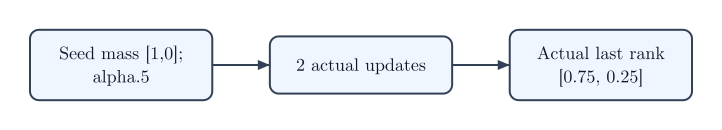
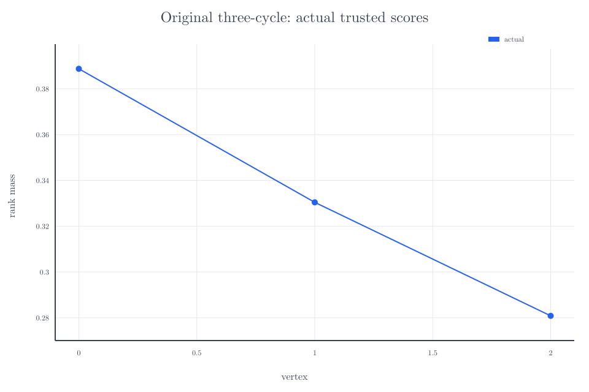
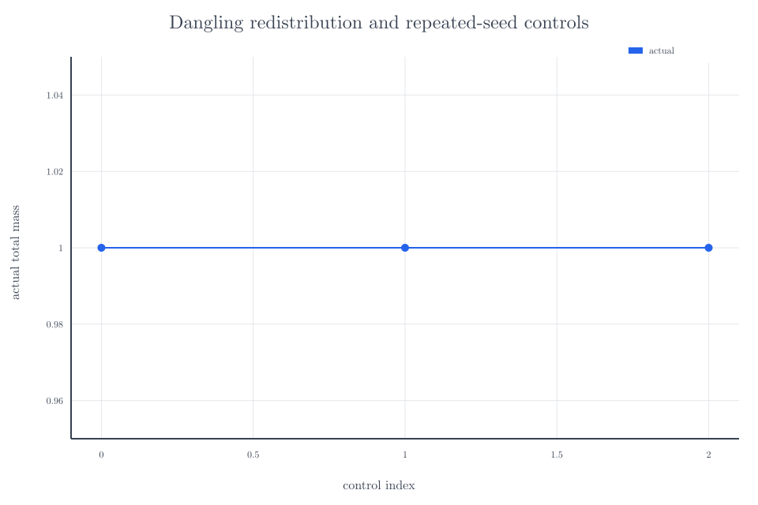
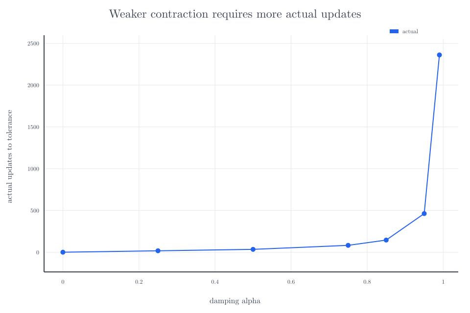

TrustRank: actual seeded Markov iterates
Abstract
Ranking a linked network from trusted seed pages requires propagating mass without treating every page as equally trusted. A personalized random surfer repeatedly follows links while returning to the supplied seeds.
The method
Let p be the seed distribution, including repeated-seed multiplicities. For a dangling source, its entire link-following mass is redistributed through p. Each iteration computes r_next=(1−α)p+αTᵀr, where T is row-stochastic after dangling completion. For0≤α<1, the mapping contracts L1 distance by at mostα and has a unique fixed point. With last successive difference δ, the returned fixed-point error is bounded by αδ/(1−α). A finite iteration cap can leave an unresolved result.
Simple worked example
#include <dm/dm.hpp>
int main() {
namespace a = dm::algorithms;
namespace g = dm::graphics;
std::filesystem::create_directories("build");
auto r = a::trust_rank_work(2, {{0, 1}}, {0}, .5, 1e-12, 2, 3);
std::print("| step | actual rank |\n|---:|---|\n");
for (std::size_t i = 0; i < r.iterates.size(); ++i)
std::print("|{}|`{}`|\n", i, r.iterates[i]);
g::Diagram concept_diagram(48, 1100);
concept_diagram.node("n0", {0, 0}, "Seed mass [1,0]; alpha.5");
concept_diagram.node("n1", {5, 0},
std::format("{} actual updates", r.iterations));
concept_diagram.node("n2", {10, 0},
std::format("Actual last rank {}", r.rank));
concept_diagram.edge("n0", "n1").edge("n1", "n2");
concept_diagram.save_svg("build/trust_rank_tiny.svg");
}| step | actual rank |
|---|---|
| 0 | [1, 0] |
| 1 | [0.5, 0.5] |
| 2 | [0.75, 0.25] |

The retained original experiment
#include <dm/dm.hpp>
int main() {
namespace a = dm::algorithms;
namespace g = dm::graphics;
std::filesystem::create_directories("build");
auto r = a::trust_rank_work(3, {{0, 1}, {1, 2}, {2, 0}}, {0});
std::vector<double> x{0, 1, 2}, y = r.rank;
std::print("| vertex | actual score |\n|---:|---:|\n");
for (std::size_t i = 0; i < 3; ++i)
std::print("|{}|{}|\n", i, r.rank[i]);
std::print("\nConverged {}; iterations {}; mass {}.\n", r.converged,
r.iterations, std::accumulate(y.begin(), y.end(), 0.));
auto p = g::RPlot::create();
p.line(x, y, "actual", {37, 99, 235}, 2);
p.points(x, y, "", {37, 99, 235}, 5);
p.title("Original three-cycle: actual trusted scores").x_label("vertex").y_label("rank mass");
p.save_svg("build/trust_rank_original.svg");
}| vertex | actual score |
|---|---|
| 0 | 0.38872691933903925 |
| 1 | 0.3304178814385616 |
| 2 | 0.2808551992223991 |
Converged true; iterations 175; mass 1.

Checking the theory and controls
#include <dm/dm.hpp>
int main() {
namespace a = dm::algorithms;
namespace g = dm::graphics;
std::filesystem::create_directories("build");
std::vector<double> x, y;
std::print("| control | rank | converged |\n|---|---|---|\n");
int i = 0;
for (auto seeds : std::vector<std::vector<std::size_t>>{{0}, {1}, {0, 0, 1}}) {
auto r = a::trust_rank_work(3, {{0, 1}}, seeds);
std::print("|`{}`|`{}`|{}|\n", seeds, r.rank, r.converged);
x.push_back(i++);
y.push_back(std::accumulate(r.rank.begin(), r.rank.end(), 0.));
}
auto p = g::RPlot::create();
p.line(x, y, "actual", {37, 99, 235}, 2);
p.points(x, y, "", {37, 99, 235}, 5);
p.y_limits(.95, 1.05).title("Dangling redistribution and repeated-seed controls").x_label("control index").y_label("actual total mass");
p.save_svg("build/trust_rank_controls.svg");
}| control | rank | converged |
|---|---|---|
[0] | [0.5405405405403361, 0.4594594594596639, 0] | true |
[1] | [0, 1, 0] | true |
[0, 0, 1] | [0.42553191489372877, 0.574468085106271, 0] | true |

Sensitivity and selected work
#include <dm/dm.hpp>
int main() {
namespace a = dm::algorithms;
namespace g = dm::graphics;
std::filesystem::create_directories("build");
std::vector<double> x, y;
std::print("| damping | actual iterations | actual last delta |\n|---:|---:|---:|\n");
for (double alpha : {0., .25, .5, .75, .85, .95, .99}) {
auto r =
a::trust_rank_work(3, {{0, 1}, {1, 2}, {2, 0}}, {0}, alpha, 1e-10,
10000);
std::print("|{}|{}|{}|\n", alpha, r.iterations, r.deltas.back());
x.push_back(alpha);
y.push_back(r.iterations);
}
auto p = g::RPlot::create();
p.line(x, y, "actual", {37, 99, 235}, 2);
p.points(x, y, "", {37, 99, 235}, 5);
p.title("Weaker contraction requires more actual updates").x_label(
"damping alpha").y_label("actual updates to tolerance");
p.save_svg("build/trust_rank_work.svg");
}| damping | actual iterations | actual last delta |
|---|---|---|
| 0 | 1 | 0 |
| 0.25 | 18 | 2.9103830456733704e-11 |
| 0.5 | 35 | 5.820766091346741e-11 |
| 0.75 | 83 | 8.533254658438238e-11 |
| 0.85 | 146 | 9.912726195437926e-11 |
| 0.95 | 463 | 9.70642455300208e-11 |
| 0.99 | 2361 | 9.902029196595663e-11 |

Interpretation and limits
Trusted seeds are external judgments, not labels inferred by the algorithm. The rank is not a probability of honesty. Duplicate directed edges affect transition probabilities; duplicate seeds affect personalization. The legacy vector wrapper returns the same final iterate, while the new work API exposes convergence.
Every figure is saved locally by its complete editable program. No separate reconstruction supplies algorithm state. Counters describe the selected events, not elapsed time or peak memory.
References
Verified in the shared ten-document batch: 85 scoped native cases;21 directly
instrumented ASan/UBSan cases;36 executable public examples;63/63 definitions
across13 full scopes plus8 changed mixed-scope contracts;10 hovers;14393
independent records/67914 checks;frozen valid-input comparisons across all ten
families including bit-identical default Iris fits;11 checkout/installed
standalone headers and linked ten-family consumer;40 executed programs and40
inspected figures with both exports. Receipts:
build/mepml-conversion/batch-404-413/.